Plug-in Host
User manual of the modular VST3 and VST 2 host
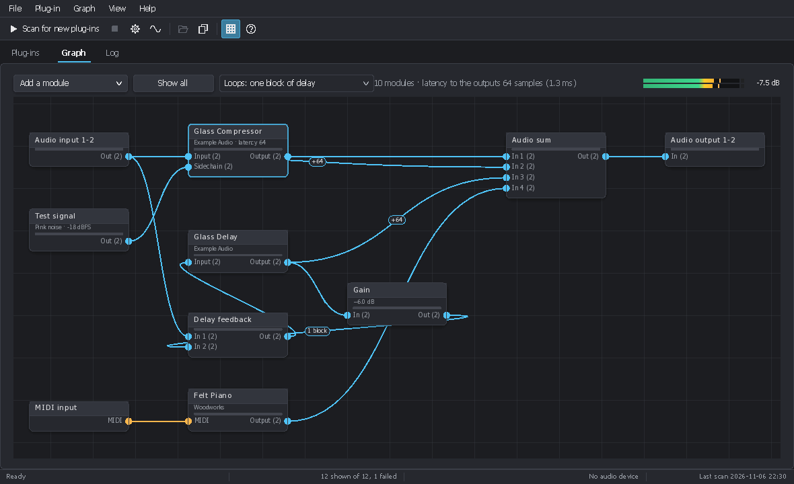
1Overview
Plug-in Host is an audio plug-in host for Windows. It loads the VST3 and VST 2 plug-ins installed on the computer, plays them live through the sound card (ASIO or WASAPI) and connects them like a modular rack: each plug-in, each input or output, each signal generator is a module, and cables carry audio and MIDI from one module to another.
Use it to:
- try a plug-in quickly, without opening a digital audio workstation (DAW);
- build an effect chain or an instrument to play live, with the lowest latency the sound card allows;
- build parallel, multiband or feedback processing;
- test your own plug-ins while you develop them (detailed log, state saved and restored, latency shown).
The window has three tabs:
- Plug-ins: the list of the installed plug-ins, with search, filters, sorting and details;
- Graph: the modules that play and their cables;
- Log: the messages of the session (plug-ins loaded or refused, files, audio device).
Plug-in Host is part of PluginUI, a C# user interface library for audio
plug-ins. It shares its settings, its plug-in list and its graph files with pluginhost, the command line host
(see chapter 14).
2Installation and first start
Requirements
- Windows 10 or 11, 64-bit (x64 or ARM64).
- A sound card: its ASIO driver for the lowest latency, otherwise the Windows sound device (WASAPI).
- 64-bit VST3 or VST 2 plug-ins. 32-bit plug-ins do not load.
From a release
- On the Releases page of the project, download
PluginHost-<version>-win-x64.zip(or…-win-arm64.zipfor an ARM PC). - Unzip it into a folder of your choice. No installation and no .NET runtime are needed:
PluginHost.exeis a native program. - Start
PluginHost.exe. If Windows SmartScreen shows a warning (the program is not signed), click More info then Run anyway.
From the sources
With the .NET 10 SDK and the cloned repository:
# for debugging
dotnet run --project tools/PluginHost.Desktop
# one native PluginHost.exe
dotnet publish tools/PluginHost.Desktop -c Release -r win-x64 -p:PublishAot=trueIn Visual Studio, open the solution and start the PluginHost.Desktop project.
At the first start
The plug-in list is empty: start a scan with F5 (chapter 6), then choose your sound card in File > Audio and MIDI (Ctrl+Shift+A, chapter 7). The Graph tab already holds a minimal graph: an audio input, a MIDI input and an audio output.
Language. The interface follows the language of Windows (English or French). View > Language changes it; it applies at the next start.
3Getting started: your first graph
This tutorial sends a guitar (or a microphone) plugged into input 1 of the sound card through a virtual amplifier, then a delay, to outputs 1 and 2. Use the plug-ins you have instead.
- Choose the sound card. File > Audio and MIDI: choose ASIO and the driver of your card (or WASAPI and your devices), with its inputs, then OK. The status bar shows the device, its sample rate and its buffer.
- Find the plug-ins. Press F5. The progress shows in the status bar; the list fills in when the scan is complete.
- Start from a blank graph. File > New graph (Ctrl+N): an audio input, a MIDI input and an audio output.
- Add the amplifier. In the Plug-ins tab, type its name in the search box (Ctrl+F) and double-click its row. It arrives in the graph, already connected to the MIDI input and to the free audio output, and the Graph tab shows.
- Connect the input. Drag from the Out connector of the Audio input module to the input connector of the amplifier. Only the compatible connectors light up while you drag.
- Add the delay. Go back to the list (Ctrl+1) and double-click the delay. As the audio output already has a cable, the delay arrives without an output cable.
- Insert the delay. Drag from the output of the amplifier to the input of the delay, then from the output of the delay to the input of Audio output: the new cable replaces the old one, since an input takes one cable.
- Adjust. Double-click a plug-in to open its window (its interface, its presets). Play: the meter at the right of the graph's bar shows the output level and the highest peak in dB.
- Save. File > Save the graph (Ctrl+S). The
.pluginui-graphfile keeps the modules, the cables and the settings of each plug-in. The current graph also comes back by itself at the next start.
Tip. To hear the amplifier and the delay in parallel rather than in series, add an Audio sum module (Add a module), connect both plug-ins to its inputs and its output to Audio output. Signals are added only by a sum.
4The main window
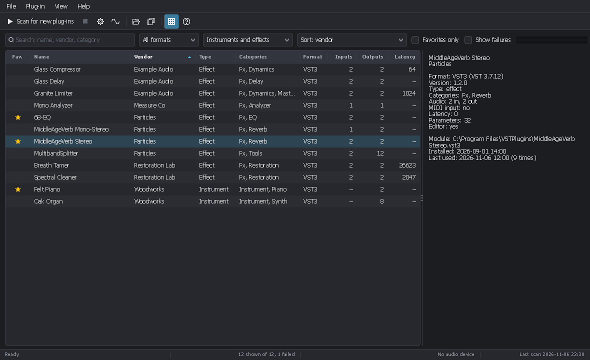
Menus
| Menu | Content |
|---|---|
| File | New graph, Open a graph, Save the graph, Save the graph as; Scan for new plug-ins, Scan everything again, Stop the scan; Plug-in folders; Audio and MIDI; Exit. |
| Plug-in | Add to the graph, Favorite, Show in Explorer, Copy the path, Ignore the module. |
| Graph | Add a module, Rename the module, Loop delay. |
| View | Plug-in list, Graph, Log; Search; Details pane; Full screen; Columns; Light theme; Language. |
| Help | About (version and credits). |
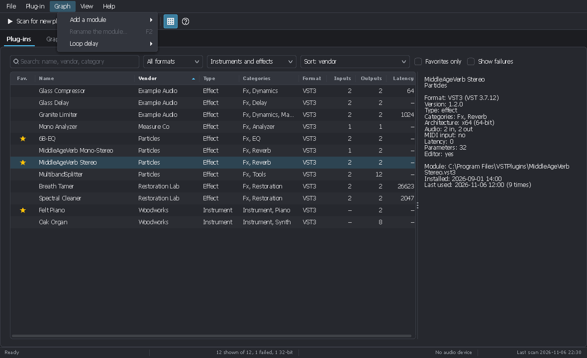
Tool bar
From left to right: Scan for new plug-ins, Stop the scan, Plug-in folders (gear), Audio and MIDI (wave), Add to the graph, Copy the path, Details pane and About. Hovering a button shows what it does and its shortcut.
Status bar
It shows the progress of a scan or the last message, the number of plug-ins shown (and failed), the audio device with its sample rate and buffer, and the date of the last scan. Its messages fade after a few seconds but stay in the log.
Theme, full screen
View > Light theme (Ctrl+T) switches between the dark and the light theme. Full screen (F11, Esc to leave) gives the whole screen to the window. The chosen tab, the columns, the filters, the theme and the sound card come back at the next start.
5The plug-in list
Search and filter
The bar above the list holds:
- the search box (Ctrl+F): name, vendor or category;
- the format: all, VST3 or VST2;
- the kind: instruments and effects, instruments only, effects only;
- the sort: name, vendor, category, format, input or output channels, latency, installation date, recently used, most used, favorites first, folder, status;
- Favorites only and Show failures (the plug-ins the scan could not load, in red).
Sort and choose the columns
Click a column header to sort the list; click again for the reverse order. Right-click the header (or View > Columns) to show or hide columns: favorite, name, vendor, type, categories, format, inputs, outputs, sidechain, MIDI, latency, parameters, editor, version, installed, last used, uses, folder, status. Drag the edge of a header to change its width.
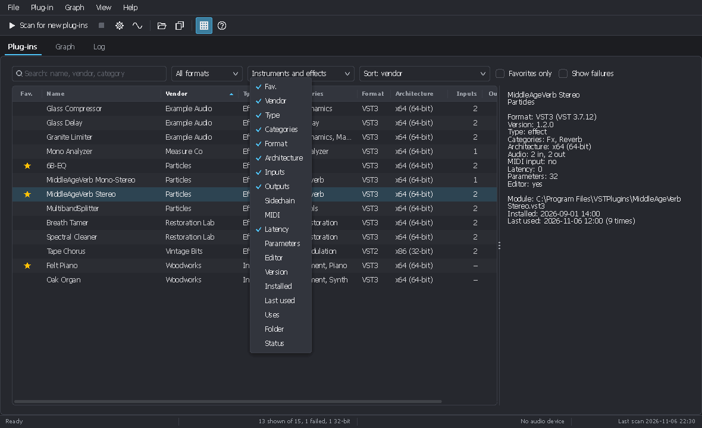
The details pane
View > Details pane (Ctrl+I) shows on the right all that is known about the selected plug-in: format and SDK version, version, categories, input and output buses, MIDI input, latency (in samples and milliseconds), number of parameters, whether it has an editor, file path, dates, number of uses and, for a failed plug-in, the reason of the failure.
The Plug-in menu
It also opens with a right click on a row, or with the Menu key of the keyboard:
- Add to the graph (Enter, double-click, Ctrl+O);
- Favorite (Ctrl+D): a star marks the plug-ins you use often;
- Show in Explorer and Copy the path (Ctrl+Shift+C);
- Ignore the module: removes the file from the list and from later scans (for a plug-in that causes trouble).
6Finding the installed plug-ins
Start a scan
- Scan for new plug-ins (F5) opens only the files that are new or changed since the last scan: it is quick.
- Scan everything again (Shift+F5) opens every file again.
- Stop the scan interrupts it: the list then stays as it was.
Each file is opened in a separate process: a plug-in that crashes or hangs during the scan is marked as failed, without stopping Plug-in Host. The list changes only when the scan is complete; the status bar gives its summary (modules scanned, unchanged, removed, failed) and the log lists the failures.
Plug-in folders
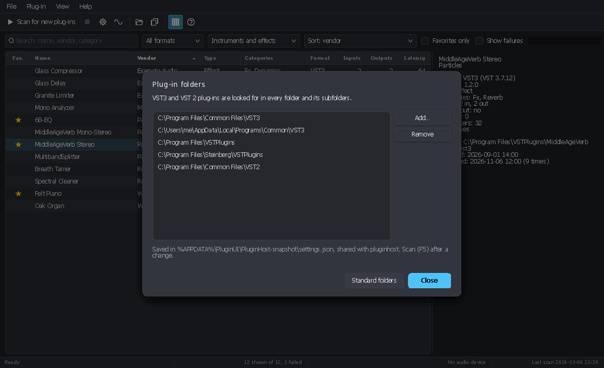
File > Plug-in folders (Ctrl+Shift+F) holds one list of folders, each
searched with its subfolders for both formats. Standard folders brings back the usual Windows folders (for
example C:\Program Files\Common Files\VST3 and the known VST 2 folders). After a change, start a scan.
7Audio and MIDI
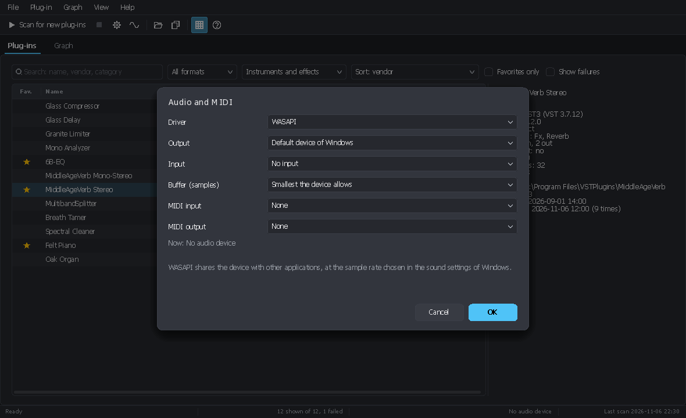
File > Audio and MIDI (Ctrl+Shift+A) chooses the driver and the ports:
WASAPI (the Windows sound device)
- Output device and input device.
- Buffer size: by default the smallest the device allows, often under 3 ms at 48 kHz.
- The device stays shared with the other applications, at the rate set in the sound settings of Windows.
ASIO (the sound card's driver)
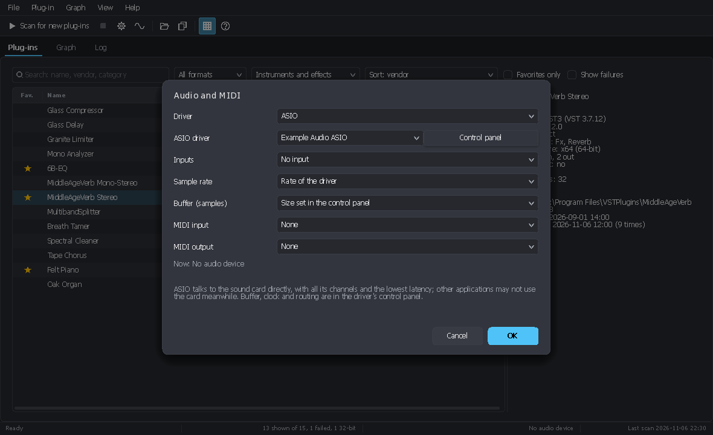
- The driver of the card and its Control panel (buffer, clock, routing). The panel opens while the driver runs: choose the driver first and click OK.
- The inputs: none, or all those of the card.
- The sample rate: the driver's, or 44.1 to 192 kHz when the card accepts it.
- The buffer: the control panel's by default.
Every output of the card is available. When the control panel changes the buffer or the rate, Plug-in Host restarts the driver by itself.
MIDI
The MIDI input port feeds the MIDI input modules of the graph (a master keyboard, for example); the MIDI output port receives what reaches the MIDI output modules.
Without a sound card
With No audio device as driver, or when the device cannot be opened, the graph runs on a 48 kHz clock with a silent output: the plug-ins, their editors and their parameters behave as in a DAW.
Output level
The meter at the right of the graph's bar shows the level of the first two outputs. On its right, the
highest peak in dB since the meter was last clicked (for example -7.5 dB, or +1.2 dB
in red when the signal goes over 0 dBFS). A click clears it.
8The graph
Principle
What plays is a graph of modules joined by cables. The inputs of a module are on the left,
its outputs on the right; each connector shows its channel count, for example In (2). Audio connectors are
blue, MIDI connectors orange.
- An output feeds as many cables as wanted.
- An input takes one cable: a new cable replaces the old one. Signals are added only in an Audio sum or a MIDI merge module.
- A mono signal entering a stereo input feeds both channels; two channels entering a mono input are averaged; otherwise the first channels match. The Muxer and Demuxer modules join or split channels explicitly.
- A plug-in plays as long as its module is in the graph, whether its window is open or not.
Adding modules
- A plug-in: double-click (or Enter) its row in the list. Its MIDI input is connected to the MIDI input module and its main output to an Audio output module that has no cable yet.
- Other modules: the Add a module button of the bar, Graph > Add a module, or a right click on an empty place of the graph (the module goes there).
Cabling
- Draw a cable: drag from a connector to another, from an output or from an input. Only the compatible connectors light up: audio to audio, MIDI to MIDI.
- Move or remove a cable: grab its end at the input and pull it away; drop it on another input to move it, or on an empty place to remove it. A click on a cable selects it; Delete removes it.
- With the keyboard: the menu of a module (right click, Shift+F10) offers Connect, with every compatible input, and Disconnect. Screen readers use them too.
Loops
A cable may go back and close a loop, for a feedback for instance. A plug-in processes whole blocks of samples: the cable
that closes the loop, drawn dashed with the label 1 block, therefore delivers its signal
one block late.
- Loops in the graph's bar (or Graph > Loop delay) runs the modules of loops in sub-blocks of 16, 32, 64 or 128 samples: the delay becomes that sub-block, at the cost of more calls to their plug-ins.
- Break the loop here, in the menu of a cable, chooses which cable of the loop carries the delay.
Latency
Some plug-ins have a latency (a look-ahead limiter, a linear-phase equalizer…). An Audio sum delays its
inputs so that paths of different latency arrive aligned: the delay added shows on the cable, for example +64.
It can be turned off in the settings of the sum. The graph's bar shows the latency up to the outputs, in samples and
milliseconds.
The menu of a module
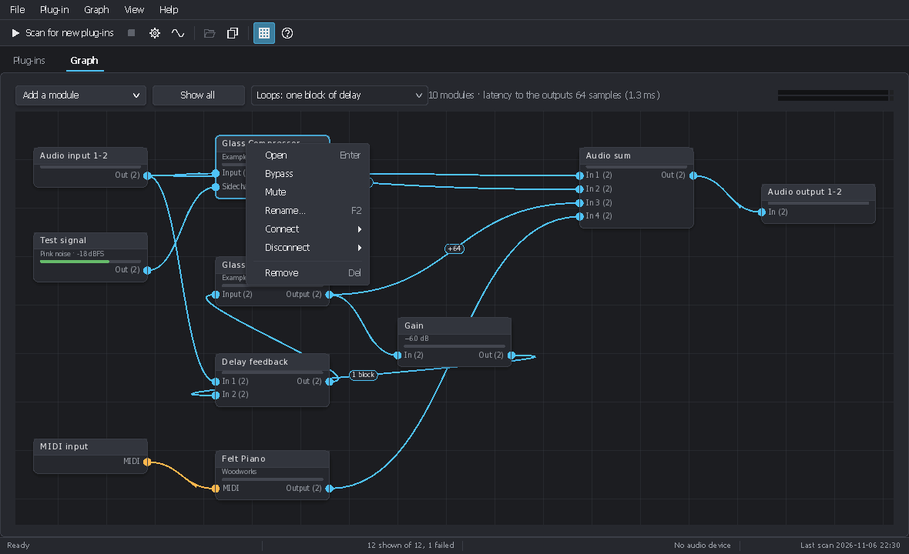
- Open (double-click, Enter): the window of the plug-in, or the settings of the module.
- Bypass and Mute (plug-ins). A bypassed or muted module is dimmed, with a badge.
- Rename (F2).
- Connect and Disconnect.
- Remove (Delete): the settings of a plug-in are then lost; Plug-in Host asks first.
Moving around the graph
- Move the view: drag an empty place (or the middle button, or Alt+drag). The wheel scrolls, Shift+wheel sideways; scroll bars appear when the graph does not fit.
- Zoom: Ctrl+wheel around the mouse, + and −, or the − and + buttons of the bar, from 10 % to 250 %. The percentage between the two buttons shows the zoom; a click on it (or Ctrl+0) goes back to the actual size.
- Show all (Home) fits the graph in the window.
Placing and selecting modules
- Drag the header of a module to move it. Modules snap to a grid that holds their first connector: two aligned modules get straight cables. Shift while dragging places them freely.
- Shift+drag on an empty place selects several modules with a rectangle; Ctrl+click adds or removes a module from the selection; the selection moves together.
- With the keyboard: Ctrl+← / Ctrl+→ select the previous or next module, Ctrl+A all; the arrows move the selection (Shift for farther).
Graph files
- New graph (Ctrl+N): an audio input, a MIDI input and an audio output.
- Open a graph (Ctrl+Shift+O), Save the graph (Ctrl+S), Save the graph as (Ctrl+Shift+S).
- A
.pluginui-graphfile keeps the modules, their names, their places, the cables and the state of each plug-in. Plug-in Host asks whether to save the changes before closing or opening another graph. - The graph as it was when the host closed comes back at the next start, even if it was never saved under a name.
Missing plug-in. A plug-in that cannot be found when a graph is opened (uninstalled, moved) stays as a MISSING module: silent, dimmed, with its cables and its settings, and saved back unchanged. The reason is in its tooltip, in the message shown by a double-click and in the log. Reinstall it, scan (F5) and open the graph again.
9The modules and their settings
A double-click on a module that is not a plug-in opens the window of its settings. They apply at once, and the window can stay open while the graph plays, next to others.
| Module | Role and settings |
|---|---|
| Plug-in | One connector per bus (main, side chain…) with its channel count, plus MIDI in and out. Its window is described in chapter 10. |
| Audio input | Input channels of the device: first channel, channel count, gain. Channels the device does not have stay silent. |
| Audio output | To output channels of the device: first channel, channel count, gain, mute. Several outputs on the same channels add up. |
| Test signal | Sine, square, sawtooth, triangle, white noise, pink noise, sweep or impulses: frequency (start of sweeps), end and duration of sweeps, interval of impulses, level in dBFS, channel count. |
| Audio file | Plays a WAV file, resampled to the device rate: file, loop, pause, gain, channel count. |
| MIDI input | The notes of the MIDI input port: all channels or one. |
| Keyboard | An on-screen keyboard, played with the mouse or the computer keyboard: MIDI channel, lowest octave. Its window can be enlarged. |
| MIDI output | Sends what reaches it to the MIDI output port. |
| Gain | A large knob and a dB entry, polarity inversion, mute, channel count, level meter. |
| Audio sum | Adds its inputs: number of inputs (2 to 32), channel count, gain of the first eight inputs, alignment of the inputs on the latency of their paths. |
| MIDI merge | Joins several MIDI streams in time order: number of inputs, alignment on the latency. |
| Muxer | Joins several mono cables into one cable of several channels (L and R into stereo): number of inputs. |
| Demuxer | The reverse: splits the channels of a cable into mono outputs. |
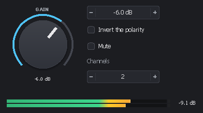
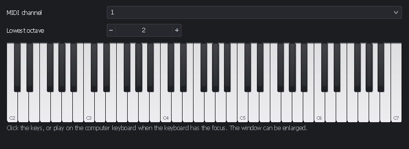
10Plug-in windows
A double-click on a plug-in module opens its window. It shows:
- the plug-in's editor, at the size it asks for, resizable when it allows it;
- or the generic parameter table when it has no editor (the Parameters button shows it
otherwise). Values are typed as the plug-in displays them (
-6 dB,Warm) or as normalized values, from 0 to 1.
The top bar
- Load preset and Save preset:
.vstpresetfiles for VST3 plug-ins,.fxp/.fxbfor VST 2 ones. They are exchanged with DAWs. - Parameters: the generic table.
- Full screen (F11): the plug-in window on the whole screen, for a stage or a second monitor. Esc or the button leaves it; when the plug-in's editor has the keyboard, click the top bar first.
- On the right: latency, number of inputs and outputs, sample rate.
The bottom bar
- Bypass: the main input goes straight to the main output.
- Mute: silences the outputs of the plug-in.
- The level meter of its output, with the highest peak in dB (a click clears it).
- For an instrument, an on-screen keyboard whose notes go to this plug-in; the notes of the MIDI input port light up its keys.
Closing the window closes the editor only: the plug-in keeps playing in the graph. Several windows can be open at once.
11The log
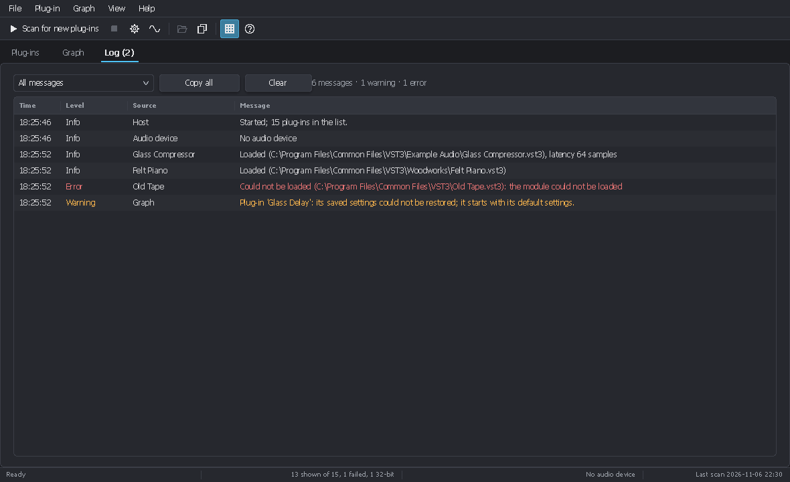
The Log tab (Ctrl+3) lists the messages of the session, with their time, level (Info, Warning, Error) and source:
- the start and the audio device;
- each plug-in loaded, with its file and its latency, or refused, with the reason;
- the graphs opened and saved, and what could not be restored;
- the presets that could not be loaded or saved;
- the plug-ins a scan could not load;
- every message of the status bar.
The drop-down list shows all messages, warnings and errors, or errors only. Copy all puts the messages shown in the clipboard (time, level, source and message separated by tabs); the right click copies the selected rows. The title of the tab counts the warnings and errors, for example Log (2). Clear empties the list.
Reporting a problem. Copy the log with Copy all and paste it in your message: it tells which file was loaded, with which result.
12Keyboard shortcuts
Everywhere
| Keys | Action |
|---|---|
| Ctrl+1 / 2 / 3 | Plug-ins / Graph / Log tab |
| Ctrl+N | New graph |
| Ctrl+Shift+O | Open a graph |
| Ctrl+S | Save the graph |
| Ctrl+Shift+S | Save the graph as |
| F5 / Shift+F5 | Scan for new plug-ins / scan everything again |
| Ctrl+Shift+F | Plug-in folders |
| Ctrl+Shift+A | Audio and MIDI |
| Ctrl+T | Light or dark theme |
| F11 / Esc | Full screen / leave it |
| F1 | About |
Plug-in list
| Keys | Action |
|---|---|
| Ctrl+F | Go to the search box |
| Enter, double-click, Ctrl+O | Add the plug-in to the graph |
| Ctrl+D | Favorite |
| Ctrl+Shift+C | Copy the path |
| Ctrl+I | Details pane |
| Menu key | Menu of the plug-in |
Graph
| Keys | Action |
|---|---|
| Enter, double-click | Open the selected module |
| F2 | Rename the module |
| Delete | Remove the selection or the selected cable |
| Ctrl+← / → | Previous / next module |
| Ctrl+A | Select all |
| Arrows (Shift: farther) | Move the selection |
| Home | Show all |
| + / − / Ctrl+0 | Zoom in / zoom out / actual size |
| Shift+F10, Menu key | Menu of the selection |
| Ctrl+wheel | Zoom around the mouse |
| Wheel / Shift+wheel | Scroll / sideways |
| Drag the background | Move the view (also the middle button, Alt+drag) |
| Shift+drag the background | Select with a rectangle (Ctrl: add) |
| Shift while moving a module | Place it off the grid |
13Troubleshooting
First, open the Log tab. Most problems are explained there.
- I hear nothing.
- Check that the status bar shows your sound card (and not No audio device); otherwise open Audio and MIDI. Then check that the last module is connected to an Audio output on the right channels, and that no module is muted or bypassed (badge on the module). The small meters in the modules show where the signal stops.
- The ASIO driver does not open.
- An ASIO driver often serves one application at a time: close the DAW or the player that uses it, then choose the driver again. The exact message is in the log.
- The sound crackles.
- Raise the buffer size (ASIO control panel, or the WASAPI setting). Loops in sub-blocks (Graph > Loop delay) also cost more processing: go back to One block.
- A plug-in is missing from the list.
- Tick Show failures: if it shows in red, the details pane (Ctrl+I) gives the reason. Otherwise, check that its folder is in Plug-in folders and use Scan everything again (Shift+F5). 32-bit plug-ins are not supported.
- A module shows MISSING.
- The plug-in could not be loaded when the graph was opened; double-click the module to read the reason. Its cables and settings are kept: reinstall it or scan again, then open the graph again.
- A plug-in starts with its default settings.
- The log then shows a warning: the plug-in refused the saved state. The details in parentheses (result code, bytes read, interfaces asked for) help to understand why; attach them to a bug report.
- A plug-in crashes during the scan.
- The scan marks it as failed without stopping Plug-in Host. To stop seeing it, choose Ignore the module in the Plug-in menu.
- The graph is too large for the window.
- Show all (Home) fits it, the − / + buttons zoom, and dragging the background moves the view.
- The interface settings are lost or odd.
- Close Plug-in Host and rename
gui.jsonin the settings folder (chapter 14): it starts again from the defaults.
14Files and command line
The settings folder
Plug-in Host keeps its files in %APPDATA%\PluginUI\PluginHost, usually
C:\Users\<name>\AppData\Roaming\PluginUI\PluginHost:
| File | Content |
|---|---|
settings.json | The plug-in folders, the ignored modules (IgnoredModules),
the time given to each file during a scan. Shared with pluginhost. |
plugins.json | The list of the plug-ins found, with favorites and uses. Shared with
pluginhost. |
gui.json | The interface settings: theme, language, columns, filters, details pane, sound card, MIDI ports, tab, last graph. |
session.pluginui-graph | The graph of the last session, opened again at start. |
PluginHost.exe --config <folder> uses another settings folder, for example for a separate stage
setup.
The command line
pluginhost, the command line host (pluginhost-cli-<version>-win-x64.zip), shares the folders,
the plug-in list and the graph files. It can, for example, render offline a graph prepared in Plug-in Host:
pluginhost graph mastering.pluginui-graph -i mix.wav -o master.wav
pluginhost graph pads.pluginui-graph --midi chords.mid -o pads.wav --tail 4Its other commands (scan, processing a file, rendering MIDI, measuring a response, presets) are described in the
host guide, which also covers the
PluginUI.Host library for developers.